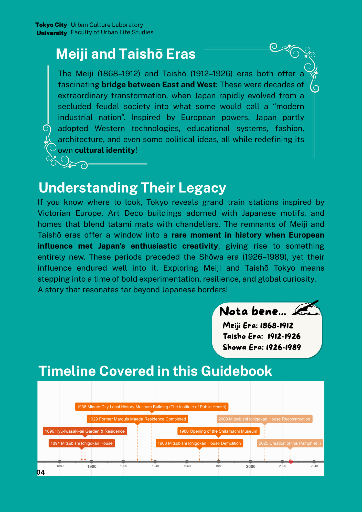
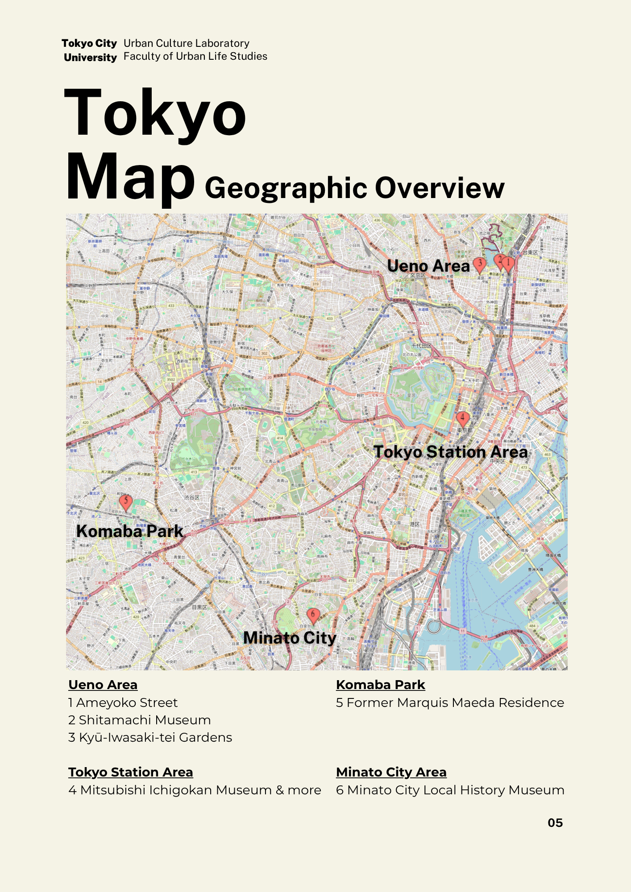
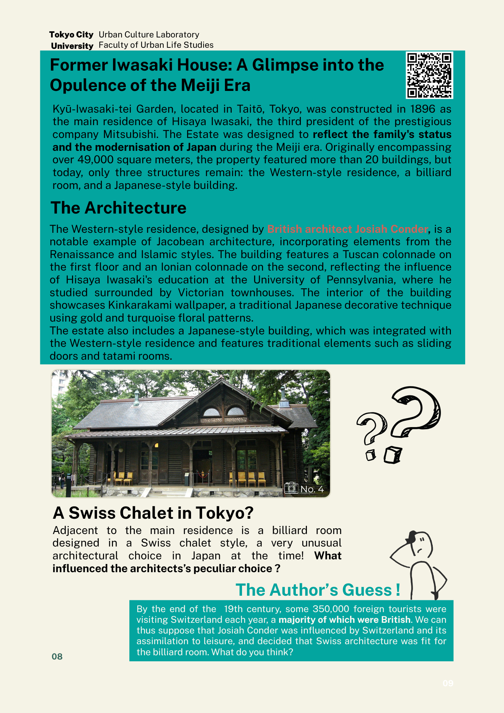
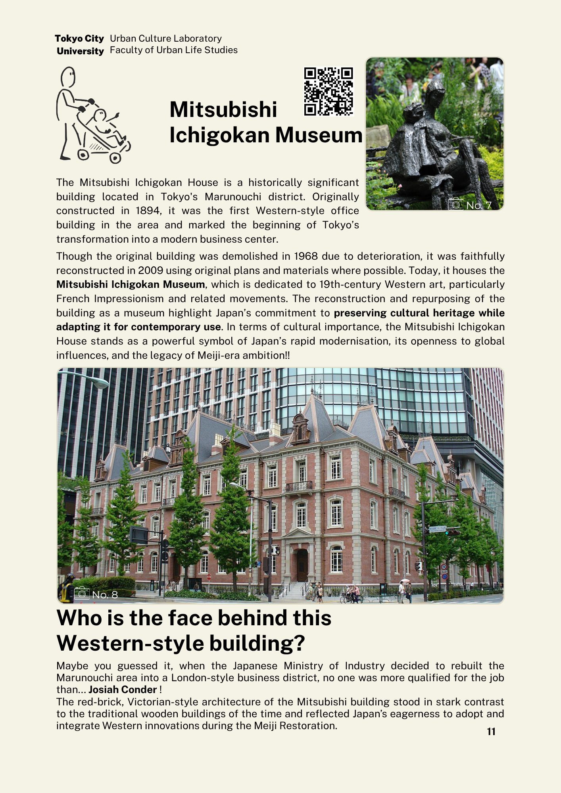
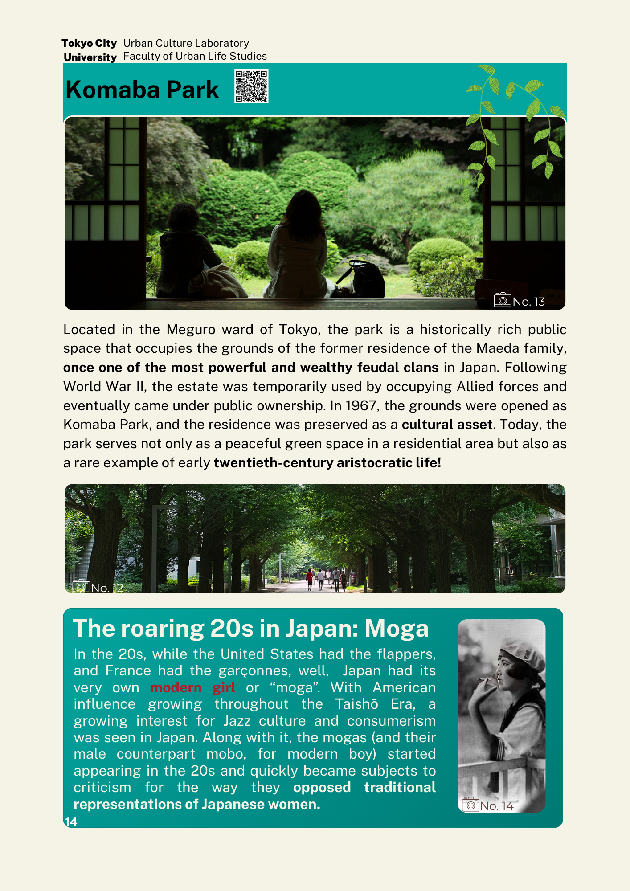
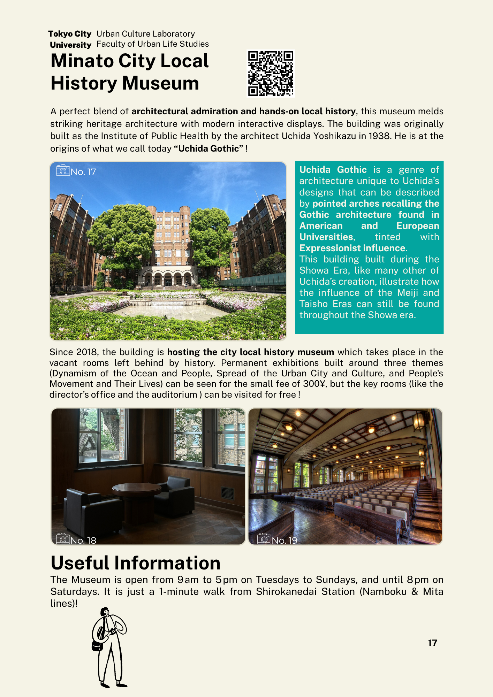

Unearthed: Tokyo Cultural Heritage Guidebook
Cover design and presentation system for a Tokyo cultural heritage guidebook that brings Meiji and Taishō era sites into a contemporary student publication.

Overview
A guidebook about visible buildings and hidden memory.
Unearthed is a Tokyo cultural heritage guidebook made for the Urban Culture Laboratory at Tokyo City University. The guide introduces sites connected to the Meiji and Taishō periods, when Western architectural influence entered Japanese urban life and created hybrid buildings across Tokyo.
My contribution focused on the cover page design and the visual framing of the guidebook as a cultural object. The cover needed to work as the first promise of the publication: this is not a generic travel pamphlet, but a guide to overlooked urban memory.
Design challenge
Question
How can a student guidebook make cultural heritage feel discoverable without making the cover look like a formal museum brochure?
The cover had to hold two messages at the same time. It needed academic credibility because the guidebook comes from a university lab. It also needed visual pull because the reader is invited to explore neighborhoods rather than read a textbook.
I used a dusk scene, a large orange sun, and a heritage building lit from inside to create the feeling of looking into a city layer that is still alive. The oversized title creates a magazine-like entry point, while the issue stamp and lab mark keep the publication system visible.
Editorial frame
The guidebook is organized around eras, routes, and buildings.
The strongest supporting pages are the Meiji and Taishō overview, the timeline, and the Tokyo map. Together, they define the guidebook’s structure before the reader reaches the site pages. This helps the project read as an editorial system rather than a set of disconnected destination entries.


Interior pages
The strongest spreads connect architecture to public memory.
Former Iwasaki House, Mitsubishi Ichigokan Museum, Komaba Park, Former Marquis Maeda Residence, and Minato City Local History Museum pages; they all give the case study enough evidence to show what the cover is introducing.




Process
From publication theme to cover system.
The working theme was cultural memory beneath the surface. I translated that into a cover that layers an old building, a city street, a large background sun, and publication information. The building is treated as the emotional anchor. The surrounding street keeps the image connected to Tokyo’s present.
The title occupies more space than a traditional guidebook masthead. This choice makes the cover feel closer to an e-magazine and helps the project stand out as a student publication. The subtitle then clarifies the content: a guidebook about Japan’s cultural memory.
Visual anchor
The heritage building carries the guidebook’s main promise. It shows history as something embedded in the city rather than locked inside an archive.
Publication identity
The cover balances the large Unearthed title with the university mark, UCL Lens E-Magazine label, and issue stamp.
Outcome
A cover that gives the guidebook a clear first impression.
The final cover positions the guidebook as a cultural exploration of Tokyo rather than a checklist of famous places. It gives the publication a visual identity that can work as a PDF cover, portfolio thumbnail, and project opener.
For the portfolio page, the most effective structure is to lead with the cover, then show the timeline and map, then show selected interior pages. This sequence makes the project easier to understand: first the visual identity, then the editorial system, then the content examples.
Built with
- Cover page design
- Claire Lin
- Guidebook author
- Jodie Steiner
- Institution
- Urban Culture Laboratory, Faculty of Urban Life Studies, Tokyo City University
- Publication
- UCL Lens E-Magazine, 2025 edition
- Portfolio image notes
- Upload the selected PNG pages to your images folder using the filenames referenced in this HTML.